Home / Past papers / MLT End Term / this paper
IIT M FOUNDATION DIPLOMA ENDTERM QPD1 07 Aug 2022 IBA NS - 07 Aug 2022

- Yes
- No
- Useful Data has been mentioned above.
- This data attachment is just for a reference & not for an evaluation.
- The number of steps required for convergence increases.
- The number of steps required for convergence decreases.
- The number of steps required for convergence is independent of the learningrate.
- The perceptron algorithm may not converge.
- Less than 30
- Greater than 30
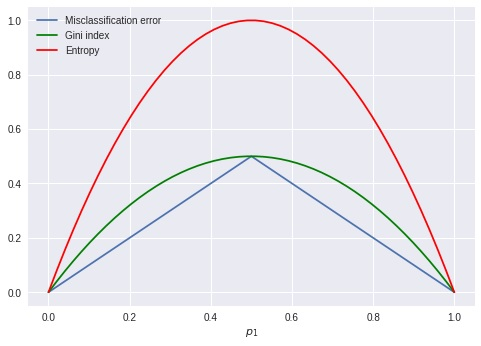


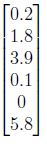
The following is the activation vector output by some hidden layer in a neural network when some input vector is given to it: Which of the following could be the activation function used in this layer?- Softmax
- Sigmoid
- ReLU
- Tanh
- Predicted number of run Indian Cricket team will score in their next ODI.
- Amount of money that Amitabh Bachchan’s next three movies each will make.
- Predicting number of goals Ronaldo will score in next 10 matches each.
- Predicting blood group of a person
- Predicting blood sugar level of a person for next 15 days each.
- Increasing p reduces the correlation between any two trees in the forest.
- Decreasing p reduces the correlation between any two trees in the forest.
- Increasing p increases the performance of individual trees in the forest.
- Decreasing p increases the performance of individual trees in the forest.
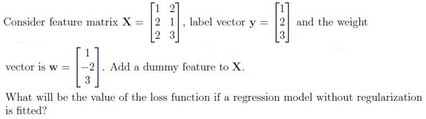
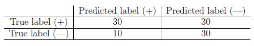
Consider a test-dataset of 100 points for a binary classification problem, where 60 belong to the positive class (true label) and the rest belong to the negative class (true label). The following is a table for some classifier that has been prepared by an ML engineer: If this is a valid confusion matrix (just by looking at the numbers), enter the classifier’s recall as the answer. If this is not a valid confusion matrix, enter 0 as the answer. Your answer should be in the interval [0, 1], endpoints inclusive. Enter your answer correct to two decimal places.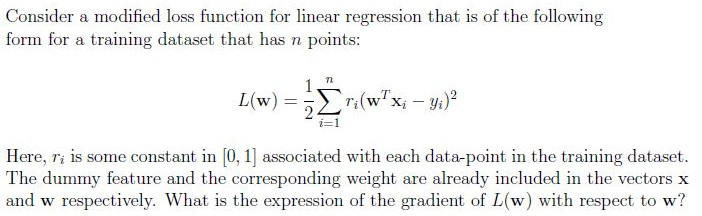
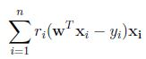
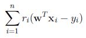
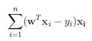
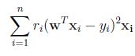
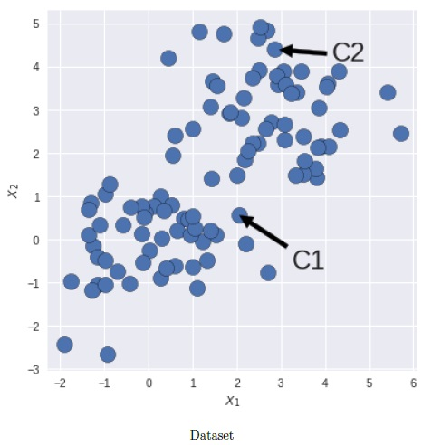
Consider unlabeled data with two features X1 and X2 as shown in the figure. C1 and C2 are the coordinates of centroids obtained after certain iterations of K-means algorithm with K = 2. Which of the following options is correct about the silhouette score S? Note: Euclidean distance is used to calculate the distances.- S will be positive and close to 0.
- S will be positive and close to 1.
- S will be exact −1.
- S will be negative but need not be exact −1.
- The network N2 will not be able to learn anything from D2. Its test accuracy onD2 will be very low.
- The network N2 will be able to learn useful patterns from D2. In fact, theperformance of network N2 on D2 will be similar to N1 on D1.
- The network N2 will be able to learn somewhat useful patterns from D2. Butthe performance of N1 on D1 will be much better than N2 on D2.
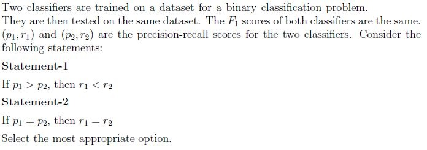
- Statement-1 is correct, statement-2 is incorrect
- Statement-1 is incorrect, statement-2 is correct
- Both statements 1 & 2 are correct
- Both statements 1 & 2 are incorrect
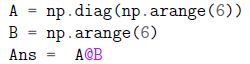
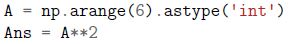
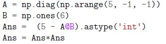
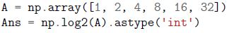
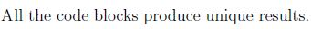
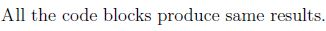
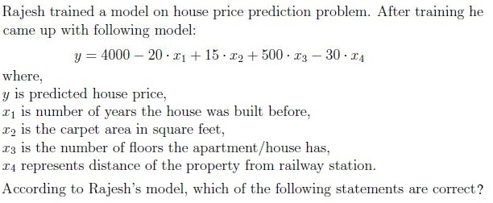
- Presence of the lift/elevator is the most important feature.
- No. of floors in the building is the most important feature.
- Area is the most important feature.
- Age is the most important feature.
- Distance from railway station is the second most important feature.
- None of these.
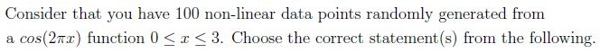
- The polynomial regression model of degree 6 adds a smooth fitting to thisdata.
- The polynomial regression model of degree 98 overfits this data.
- The polynomial regression model of degree 2 adds a smooth fitting to thisdata.
- The polynomial regression model of degree 3 underfits this data.
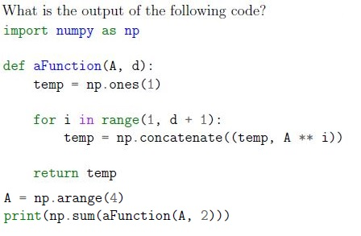
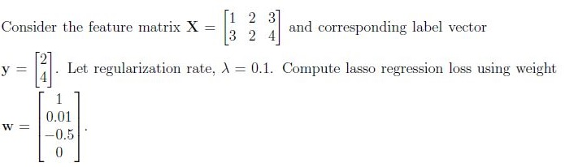
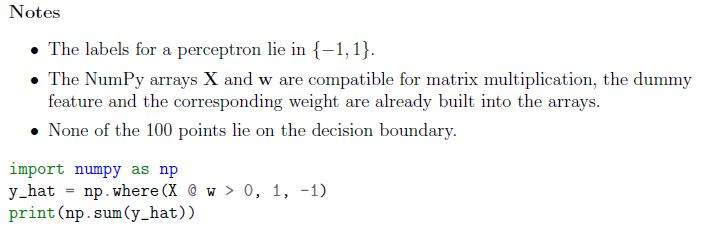
You are given a linearly separable dataset with feature matrix X, for which a perceptron has been trained until it converges (perfectly separates the data). The weight vector corresponding to it is w. This dataset has 60 points from the positive class and 40 from the negative class. What is the output of the following snippet of code?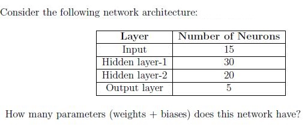
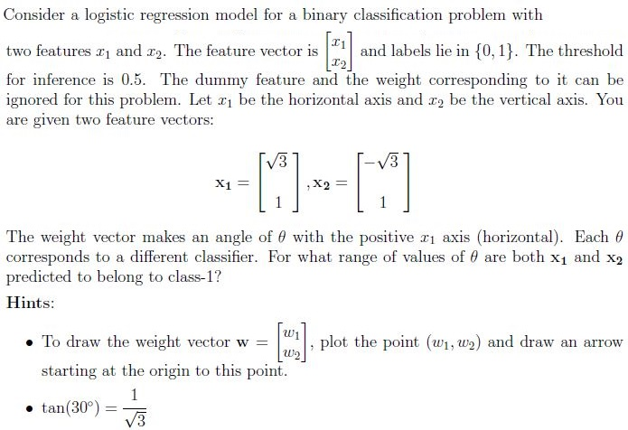
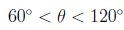
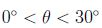
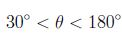
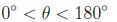
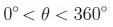
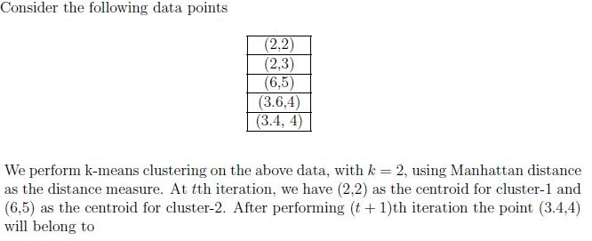
- cluster-1
- cluster-2
- can not be determined
- The first row of the matrix corresponds to all outgoing connections from thefirst neuron in layer l − 1.
- The first row of the matrix corresponds to all incoming connections to the firstneuron in layer l .
- The last column of the matrix corresponds to all incoming connections to thelast neuron in layer l .
- The last column of the matrix corresponds to all the outgoing connectionsfrom the last neuron in layer l − 1.
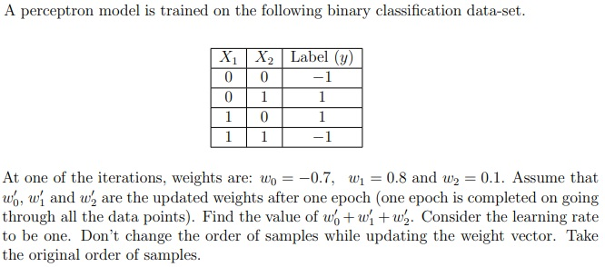
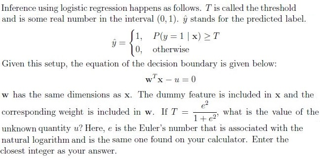
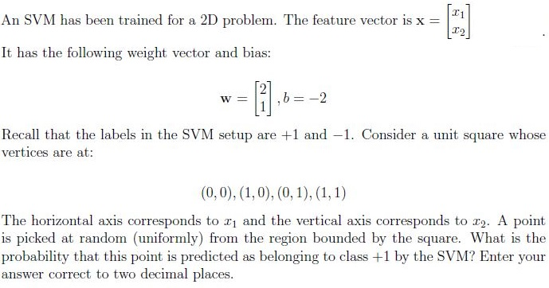
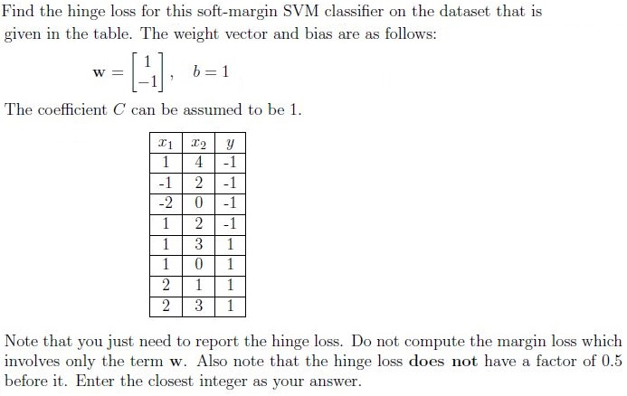
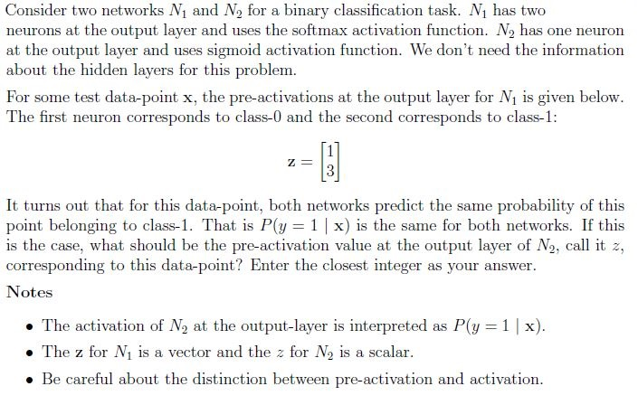
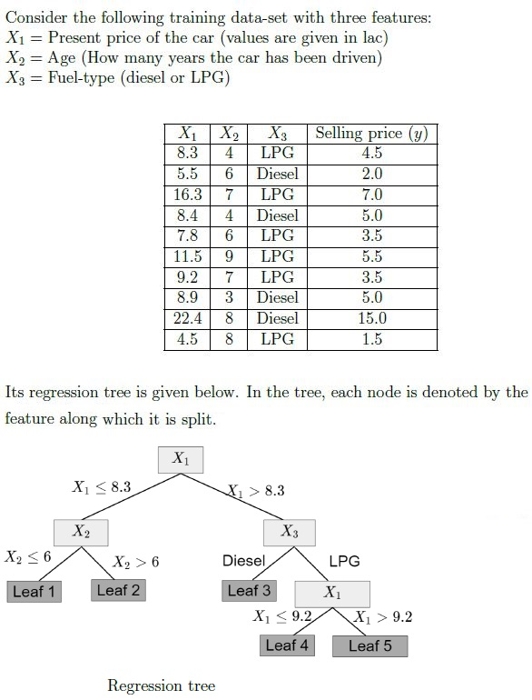
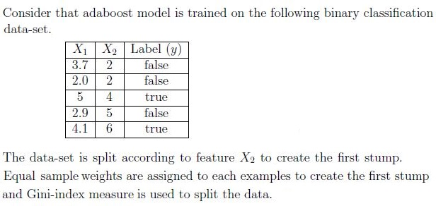
Answer key
- Q1 (MCQ, 0 marks): A
- Q2 (MCQ, 0 marks): A
- Q3 (MCQ, 2 marks): C
- Q4 (MCQ, 2 marks): A
- Q5 (MCQ, 2 marks): A
- Q6 (MCQ, 2 marks): C
- Q7 (MSQ, 2 marks): B, C, E
- Q8 (MSQ, 2 marks): B, C
- Q9 (SA, 2 marks): 14 to 15
- Q10 (SA, 2 marks): 0.49 to 0.51
- Q11 (MCQ, 3 marks): A
- Q12 (MCQ, 3 marks): D
- Q13 (MCQ, 3 marks): B
- Q14 (MCQ, 3 marks): C
- Q15 (MSQ, 3 marks): A, B, C
- Q16 (MSQ, 3 marks): B, E
- Q17 (MSQ, 3 marks): A, B, D
- Q18 (SA, 3 marks): 21.0
- Q19 (SA, 3 marks): 9.5 to 10.5
- Q20 (SA, 3 marks): 20
- Q21 (SA, 3 marks): 120
- Q22 (SA, 3 marks): 1205
- Q23 (SA, 3 marks): 0.19 to 0.21
- Q24 (MCQ, 4 marks): A
- Q25 (MCQ, 4 marks): B
- Q26 (MSQ, 4 marks): A, C
- Q27 (SA, 4 marks): -1.8
- Q28 (SA, 4 marks): 2
- Q29 (SA, 4 marks): 0.24 to 0.26
- Q30 (SA, 4 marks): 4
- Q31 (SA, 4 marks): 2
- Q32 (SA, 2 marks): 1
- Q33 (SA, 3 marks): 7.0
- Q34 (SA, 4 marks): 0.67 to 0.72
- Q35 (SA, 4 marks): 0.08 to 0.12
Concepts this paper tests
Auto-generated summary from the source site. Handy as a checklist; the lessons above explain each idea from scratch.
Here’s a structured summary of core topics, concepts, principles, and equations essential for the exam, followed by Mermaid knowledge graphs to visualize relationships.
Core Topics & Concepts
1. Supervised Learning
A. Linear Models
Perceptron Algorithm
- Convergence: Independent of learning rate (
α) for linearly separable data (Q3). - Update rule: .
- Decision boundary: .
- Convergence: Independent of learning rate (
Linear Regression
- Loss (MSE): (Q9, Q11).
- Gradient: .
- Weighted Loss: → Gradient: (Q11).
- Lasso Regression: (Q19).
Logistic Regression
- Sigmoid: .
- Loss (Cross-Entropy): .
- Decision boundary: → (threshold) (Q28).
- Probability interpretation: .
B. Non-Linear Models
Polynomial Regression
Underfitting/Overfitting:
- Degree 2/3: Underfits (Q17).
- Degree 6: Smooth fit.
- Degree 98: Overfits.
- Bias-Variance Tradeoff.
Neural Networks
Activation Functions:
- ReLU: (Q6).
- Sigmoid: .
- Tanh: .
- Softmax: .
Architecture:
- Parameters: (Q22).
Weight matrix :
- Rows: Outgoing connections from neuron in layer .
- Columns: Incoming connections to neuron in layer (Q26).
- Invariance: Rotating images (e.g., upside-down) doesn’t degrade performance if trained on rotated data (Q13).
Support Vector Machines (SVM)
- Hinge Loss: (Q30).
- Margin: .
- Decision boundary: .
- Probability: For a random point in , probability of class is the area where (Q29).
Decision Trees & Ensembles
Decision Trees:
- Splits: Gini/Entropy (Q5).
- Regression trees: Predict mean of leaf nodes (Q32, Q33).
Random Forest:
- Feature subsampling: Decreasing (features per split) reduces correlation between trees (Q8).
- Performance: Increasing improves individual tree performance.
AdaBoost:
- Stumps: Weak learners (e.g., split on ) (Q34, Q35).
- Sample weights: Updated based on misclassification (higher weight for misclassified samples).
C. Evaluation Metrics
Classification:
Confusion Matrix: TP, TN, FP, FN (Q10).
- Recall: .
- Precision: .
- -Score: .
Relationships:
- If is fixed, (Q14).
Regression:
- MSE, .
Clustering:
Silhouette Score: , where:
- : Mean intra-cluster distance.
- : Mean inter-cluster distance.
Interpretation:
- : Well-separated.
- : Overlapping.
- : Incorrect clustering (Q12).
2. Unsupervised Learning
K-Means Clustering
- Manhattan Distance: (Q25).
- Centroid Update: .
Gaussian Mixture Models (GMM)
- Not covered in questions, but related to Naive Bayes.
3. Probabilistic Models
Naive Bayes
Gaussian Naive Bayes:
- Parameters: Mean () and variance () per feature per class.
- Total parameters: (where features, classes) (Q21).
Multinomial Naive Bayes:
- For discrete features (e.g., text).
Multi-Label vs. Multi-Class
- Multi-Label: Multiple labels per sample (e.g., predict goals in 10 matches) (Q7).
- Multi-Class: Single label from classes.
4. Optimization & Loss Functions
Gradient Descent:
- Update: .
- Learning rate (): Affects convergence speed (Q3).
Regularization:
- L1 (Lasso): .
- L2 (Ridge): .
5. Model Evaluation & Selection
Bias-Variance Tradeoff:
- High bias: Underfitting (e.g., low-degree polynomial).
- High variance: Overfitting (e.g., high-degree polynomial) (Q17).
k-NN:
- : Small (e.g., ) reduces bias but increases variance (Q4).
Cross-Validation:
- Train/validation/test splits.
6. Mathematical Foundations
Linear Algebra:
- Matrix multiplication: (Q9, Q19).
- Dot product: .
Probability:
- Uniform distribution (Q23, Q29).
- Conditional probability: .
Calculus:
- Gradients: (Q11).
7. Programming (NumPy)
Array Operations:
np.diag,np.arange,np.concatenate(Q15, Q18).- Broadcasting: (matrix multiplication).
Logical Indexing:
np.where(condition, x, y)(Q20).
Key Equations
| Topic | Equation |
|---|---|
| Perceptron Update | |
| Linear Regression Loss | |
| Weighted Regression Grad | |
| Logistic Regression | |
| SVM Hinge Loss | |
| Softmax | |
| Gini Index | |
| Entropy | |
| Silhouette Score | |
| AdaBoost Sample Weight |